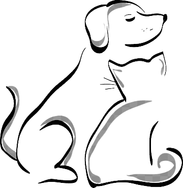
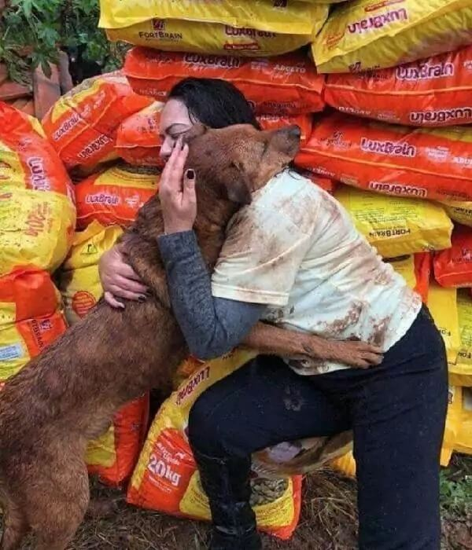
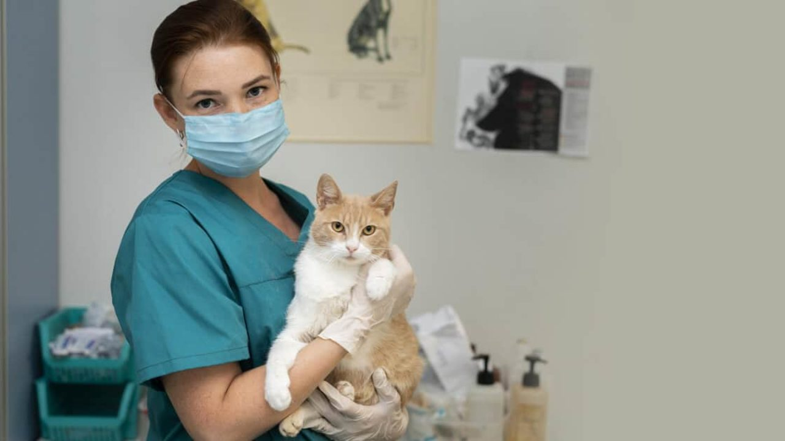

|  |
Bem-vindo ao PETNET. Somos uma ONG de adoção e doação de pets criado em 2023!Conectamos pessoas que desejam adotar com animais em busca de um lar.oferecemos perfis detalhados,suporte durante o processo de adoção e uma comunidade acolhedora de amantes de animais. |
|
|
Aqui relembramos o dia que essa linda família, concedeu um lar novo para esse pet que foi resgatado nas ruas por um de nossos institutos. |
|  | Aqui esta o registro de uma bela doação de um de nossos parceiros, que através de instituto PetNet está fazendo uma boa acão para os Pets. |
|  | Esse é um dos consultórios colaboradores do nosso instituto, tratando de um de nossos Pets. |
Para adotar ou doar um pet. Acesse o link.